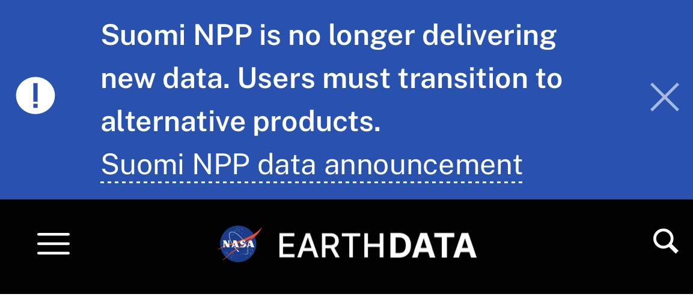

Wildfire Data · Satellite Transition
Wildfire Monitoring After MODIS: What Changes for Fire Teams in 2027
What would happen if the satellites that spot wildfires from space stopped looking?
Far from roads and towns, a new wildfire can burn for hours before anyone on the ground sees the smoke. Satellites circling the planet pick up that heat from orbit, and NASA publishes the readings through NASA FIRMS, a free fire map and data service open to anyone. Emergency agencies and land managers use it to direct crews and track active fires. Insurers and researchers draw on the same data for risk models, automated alerts and studies of how fire seasons are changing. During major wildfires, few NASA websites draw more visitors. Several of the satellites behind that service are reaching the end of their working lives, and the largest loss arrives in 2027 with the MODIS end of mission.
1. MODIS End of Mission: When Terra and Aqua Stop Collecting Data
Terra is scheduled to end science operations in February 2027, and Aqua in September 2027, according to NASA's mission update. Both satellites are running short of fuel and power.
MODIS, short for Moderate Resolution Imaging Spectroradiometer, is a sensor that measures light and heat rising from Earth's surface. One copy flies on each satellite. Terra launched in December 1999 and Aqua in July 2002, and together they have recorded fires, vegetation, oceans and the atmosphere for more than two decades. Terra alone was designed for six years of service, and it is now in its 27th year.
| Satellite | Launched | Sensor | Scheduled end of science operations |
|---|---|---|---|
| Terra | December 1999 | MODIS | February 2027 |
| Aqua | July 2002 | MODIS | September 2027 |
Plan around those dates with some caution. A 2025 note from NASA's atmosphere team gave earlier dates for both, August 2026 for Aqua and January 2027 for Terra, and the schedule has moved since. Aging hardware also fails without notice. On March 26, 2026, Terra suffered an anomaly that put MODIS into standby, and it returned to normal work the following day.
2. Suomi NPP End of Data: The Retirement That Has Already Happened
At 13:00 UTC on November 2, 2026, the Suomi NPP satellite stopped delivering new data to FIRMS. Its VIIRS sensor, short for Visible Infrared Imaging Radiometer Suite, had supplied fire detections at a finer scale than MODIS for more than a decade.

Fire data was only part of what ended. NASA also stopped producing Suomi NPP's burned area maps, ozone and aerosol readings, daily satellite imagery and Black Marble images of lights at night. Email alerts tied only to Suomi NPP went quiet on the same day.
Everything recorded before November 2 stays available, so a dashboard reading Suomi NPP data still loads with a history that looks complete. Only the days since the cut-off are empty. NASA is still working on a way to continue the burned area product from other satellites, so teams that depend on it face a gap with no fixed end date.
3. What Replaces MODIS for Wildfire Detection
Two satellites already in orbit carry the work forward. NOAA-20 and NOAA-21 each carry the same VIIRS sensor that flew on Suomi NPP, follow the same orbit about 50 minutes apart, and produce the same fire products. NASA names them as the direct replacements in FIRMS, and their data is already in the service today.
Geostationary weather satellites add a different strength. GOES-East, GOES-West, Himawari and Meteosat stay fixed over one part of the globe and look again every 10 to 15 minutes, so they catch a fire's growth through the day. The trade-off is detail, because their pixels start at 2 to 3 km across and grow larger toward the edge of their view.
| Source | Pixel size | How often it looks | Status |
|---|---|---|---|
| MODIS on Terra and Aqua | 1 km | About twice a day per satellite | Retiring in 2027 |
| VIIRS on NOAA-20 and NOAA-21 | 375 m | About twice a day per satellite | Operational |
| Geostationary satellites | 2 to 3 km and coarser | Every 10 to 15 minutes | Operational |
Longer term, federal agencies asked NASA to keep FIRMS running beyond MODIS, and NASA has begun work on a second-generation FIRMS with sharper, faster data. Europe moved first. The Copernicus Atmosphere Monitoring Service added VIIRS fire data to its global fire system on December 4, 2025.
4. The Morning Satellite Pass That Disappears With Terra
Terra is the only satellite in FIRMS that passes overhead in the morning. It crosses the equator at about 10:30 local time, and Aqua, NOAA-20 and NOAA-21 follow roughly 3 hours later, in the early afternoon.
Once Terra stops, a fire that starts overnight or at dawn will usually wait until early afternoon for its first look from a polar-orbiting satellite. For a fast-moving fire, those are the hours when early warning counts most. NASA has said it is still investigating how to keep morning fire detection going, and it has not named a replacement.
Two sources soften the gap without closing it. Geostationary satellites keep watching through the morning, though small fires can slip below their coarser pixels. Landsat 8 and 9 also pass in the morning, but only cover the US and Canada in FIRMS and return to the same spot every 8 days between them.
5. Does VIIRS Detect More Fires Than MODIS?
Yes, in most cases. VIIRS reports fire in 375-metre pixels, each covering about a seventh of the ground of a 1 km MODIS pixel. NASA notes that the finer scale responds better to small fires and maps the edges of large ones more precisely.
The difference matters most to anyone comparing fire activity across years. One MODIS detection can line up with several VIIRS detections over the same patch of burning ground. A fire record that switches from MODIS to VIIRS in 2027 will show a jump in detections that reflects a sharper sensor, with no change in how much actually burned.
Oregon's 2026 season shows why the question is no longer academic. The state burned more than 2 million acres, its worst year on record, and the Big Grass Fire alone became the largest in Oregon history after it started on July 23. Seen through MODIS and through VIIRS, the same fire produces two different sets of points, and any comparison with past seasons has to account for that before drawing conclusions.
6. What Fire Teams Should Change Before 2027
- Find every retired source - Search code, scripts and data pipelines for requests to Suomi NPP, and switch them to NOAA-20 or NOAA-21. Do the same for MODIS before February 2027.
- Rebuild alerts and saved maps - FIRMS email alerts and map layers set to Suomi NPP need NOAA-20 and NOAA-21 added by hand through FIRMS Fire Alerts.
- Run both sensors side by side - Pull MODIS and VIIRS together for the same areas until Aqua stops. The overlap shows how the two compare in your region.
- Mark the break in long-term records - Keep MODIS and VIIRS counts in separate series, and label the date your record changes sensor in every chart and report.
- Cover the morning - Add geostationary detections wherever early warning matters, since no polar-orbiting satellite will fill that slot after Terra.
- Expect history to shift slightly - NASA plans a final reprocessing of the MODIS archive and expects to finish by January 2030, so past figures may move a little when it lands.
7. Planning Wildfire Monitoring for 2027 and Beyond
The months before the next Northern Hemisphere fire season are the cheapest time to make these changes. Systems can be tested against live VIIRS data while fire activity is low, and long-term records can be split cleanly before Terra's February deadline forces the issue.
The longer view is encouraging. Fire detection from space is moving to finer sensors, Europe has already made the switch, and NASA's second-generation FIRMS is in development. Teams that move early will start the 2027 season with sharper data than they have ever had, and one blind spot fewer to explain when a fire is found late.
8. Frequently Asked Questions
Will historical MODIS fire data still be available after 2027?
Yes. NASA keeps the full MODIS archive available, and only new detections stop. A final reprocessing of the archive is planned for completion by January 2030.
Is NASA FIRMS still working after Suomi NPP stopped?
Yes. FIRMS continues to publish fire detections from NOAA-20, NOAA-21, MODIS, Landsat and geostationary satellites. Only new Suomi NPP data has ended.
Do I need to change my FIRMS API requests?
Yes, if they ask for Suomi NPP or MODIS data. Change VIIRS_SNPP_NRT to VIIRS_NOAA20_NRT or VIIRS_NOAA21_NRT now, and plan the same switch for MODIS before February 2027.
Which satellites will provide wildfire data after Terra and Aqua retire?
NOAA-20 and NOAA-21 carry the work forward with their VIIRS sensors, alongside geostationary satellites such as GOES-East, GOES-West and Himawari. Landsat 8 and 9 add occasional coverage over the US and Canada.
Why do the MODIS retirement dates keep changing?
NASA sets the end dates by how much fuel and power each satellite has left, and it revises them as those estimates change. The current dates are February 2027 for Terra and September 2027 for Aqua.
Sources
- Transitioning from Suomi NPP VIIRS and OMPS: What FIRMS Users Need to Know (NASA Earthdata, October 2026)
- Terra: The End of an Era (NASA Science)
- MODIS to VIIRS Transition for Atmospheric Science Products (NASA LAADS, April 2025)
- Terra MODIS Placed in Standby Mode (NASA Earthdata, March 2026)
- Kicking off Development of New Earth Observation Solutions (NASA Earthdata)
- Drifting Away From MODIS in the CAMS Global Fire Assimilation System (Copernicus)
- VIIRS NOAA-20 375 m Active Fire Product (NASA Earthdata)
- Oregon's Record-Breaking 2026 Fire Season Draws to a Close (KTVZ, November 2026)
- Grasshopper and Big Grass Fire Updates (OPB, August 2026)